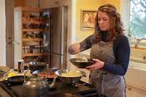
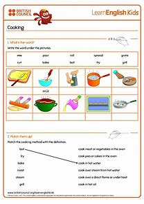

Description:
Fluffy pancakes studded with juicy blueberries—perfect for a lazy weekend breakfast or brunch.

Ingredients:
- 1 cup all-purpose flour
- 1 tablespoon sugar
- 1 teaspoon baking powder
- 1/2 teaspoon baking soda
- 1/4 teaspoon salt
- 1 cup buttermilk
- 1 large egg
- 2 tablespoons melted butter
- 1 cup fresh blueberries

Instructions
- In a mixing bowl, whisk together the flour, sugar, baking powder, baking soda, and salt.
- In another bowl, beat the egg and mix in the buttermilk and melted butter.
- Combine the wet and dry ingredients, stirring until just combined (some lumps are okay).
- Gently fold in the fresh blueberries.
- Heat a non-stick skillet or griddle over medium heat. Grease with a little butter.
- Pour 1/4 cup of batter onto the skillet for each pancake.
- Cook until bubbles form on the surface, then flip and cook the other side until golden brown.
- Serve warm with maple syrup and extra blueberries.